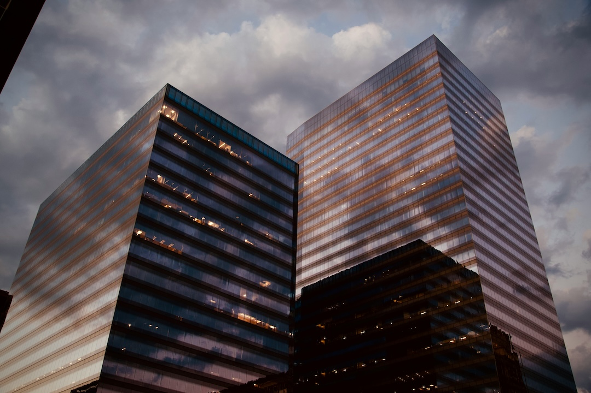

At Tesseract, we are dedicated to revolutionising communication for non-speaking children and young individuals with special needs through our innovative device, TouchTalk. Unlike other solutions on the market, TouchTalk harnesses the power of holographic technology to create a seamless and engaging communication experience. By projecting communication tiles onto a surface, our device enables non-verbal children and young people to effectively communicate with their educators and peers using Special Educational Needs and
Disabilities (SEND) communication images, transcending the limitations of traditional communication cards.
Our dedication to accessibility and innovation is evident in every aspect of TouchTalk. Through our user-friendly mobile application, individuals can easily select from a wide array of communication tiles, ranging from food items to activities. These tiles are then projected onto a surface, providing a visual aid that enhances communication and engagement. Moreover, TouchTalk
incorporates sensory elements such as textured sides and joysticks for additional stimulation as an added comfort to the user but also as a means of capturing and keeping attention on the communication task at hand.
The core of our venture lies a commitment to empowering non-verbal individuals to express themselves confidently and independently. By providing a solution that goes beyond mere communication, TouchTalk fosters a sense of self-sufficiency and self-assurance.
During this foundational phase, TouchTalk will strategically allocate resources to support essential activities. Financial priorities include funding research and development efforts, conducting pilot programs, and establishing a reliable supply chain while ensuring regulatory compliance. These investments are critical for setting the stage for future growth and success. While initial expenditures may be significant, we anticipate that they will yield long-term benefits by positioning Touch Talk as a leader in innovative communication solutions for the SEND community. Through prudent financial management and strategic resource allocation, we are confident in our ability to achieve our goals and deliver value to our stakeholders.
